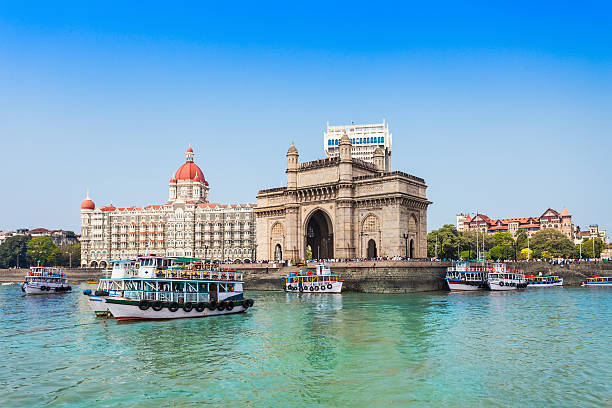
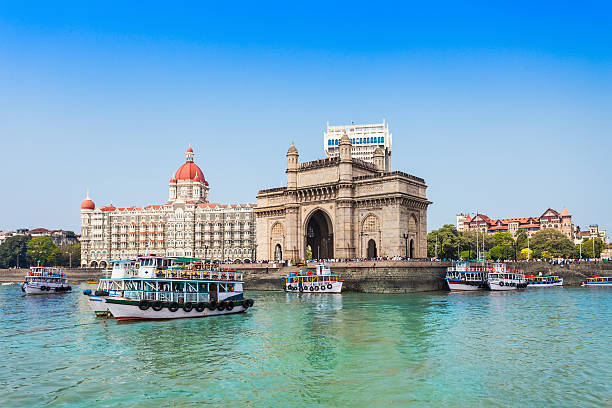

Mumbai
Mumbai is the capital city of Maharashtra.It is located near the bank of Arabian sea.it has many places like Taj Mumbai,Chhatrapathi Shivaji Terminal,Marine Drive and High Offshore Oilfield in which millions of petroleum extracted.
 
